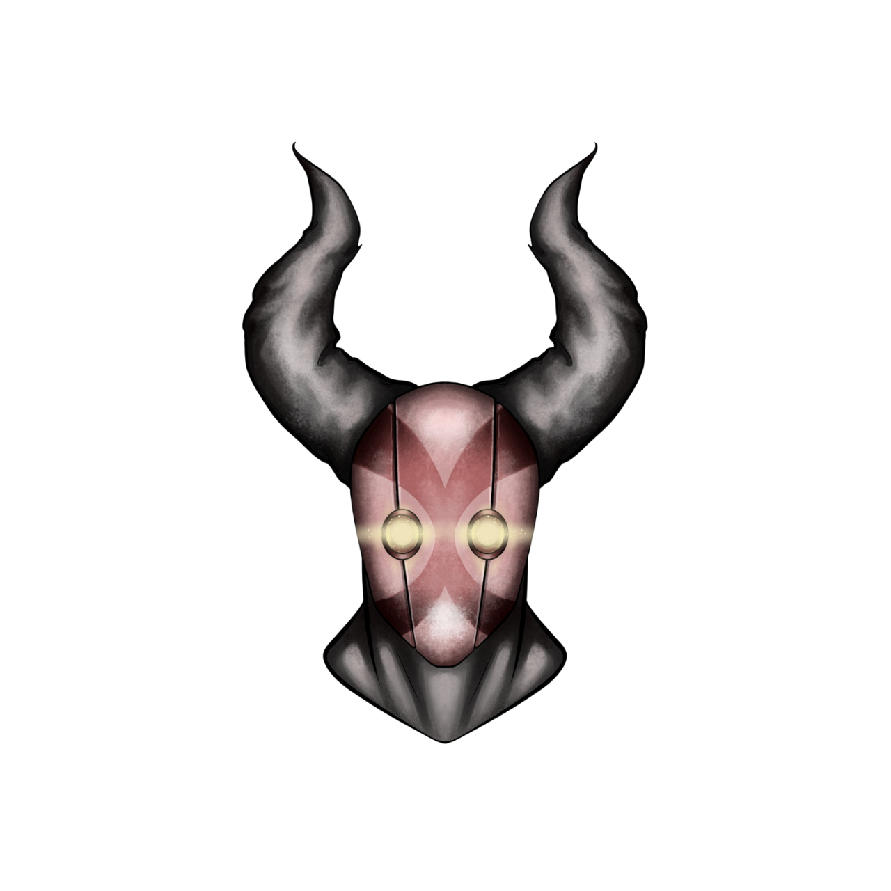
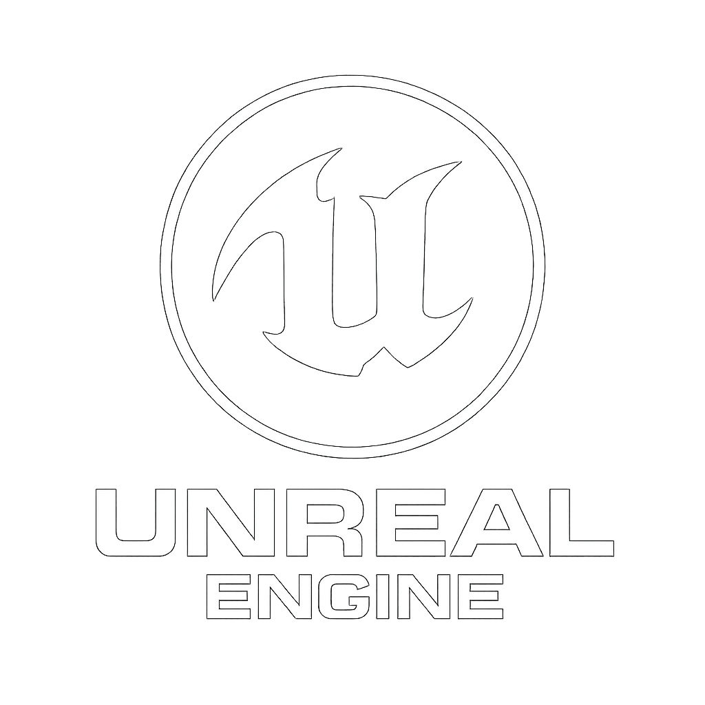
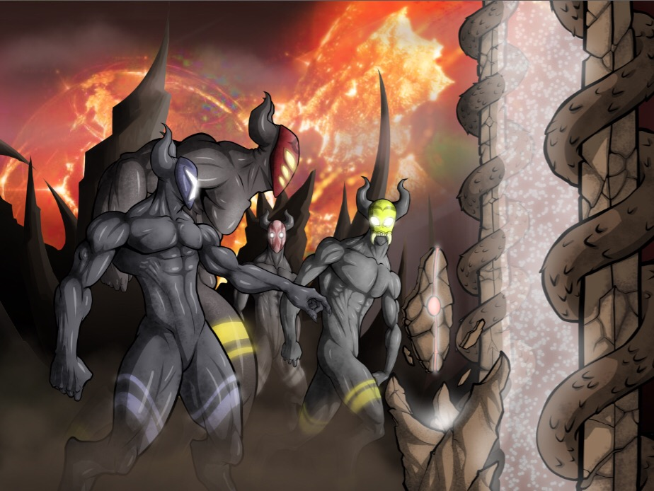

Power of Bombs
By Buried Games Studio
By Buried Games Studio

Power of Bombs is an explosive tactical action game from Buried Games
Studio.
In this battlefield of chaos and precision, you’ll detonate your way to victory by leveraging
synergy-based bomb mechanics, unique faction abilities, and real-time decision-making.
🚧 This game is currently in development. Stay tuned! 🚀

Developed using Unreal Engine
Get the latest updates, behind-the-scenes content, and early access to game news!